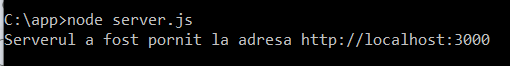
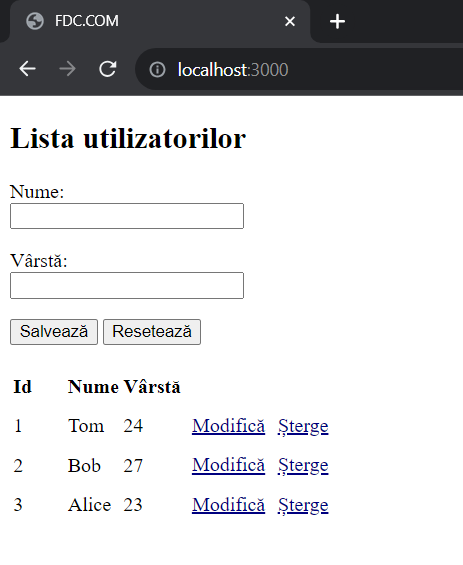

Crearea unui client pentru REST API.
Folosind Fetch API în JavaScript, se poate implementa un client complet pentru Web API în stil
REST pentru interacțiunea cu utilizatorul. Arhitectura REST presupune utilizarea următoarelor
metode sau tipuri de cereri HTTP pentru interacțiunea cu serverul:
Să examinăm cum să creăm propriul client în JavaScript
pentru API.
Crearea unui server pe node.js.
Pentru început, vom defini serverul care va reprezenta de fapt Web API. Ca
exemplu, vom folosi Node.js. Pentru a procesa cererile, vom defini următorul fișier server.js:
|
const http = require("http");
const fs = require("fs");
// datele cu care lucrează
clientul
const users = [
{ id:1, name:"Tom",
age:24},
{ id:2, name:"Bob", age:27},
{
id:3, name:"Alice", age:23}
]
// procesăm datele primite de la
client
function getReqData(req) {
return new Promise(async (resolve, reject) =>
{
try {
const buffers = [];
for await (const chunk of req) {
buffers.push(chunk);
}
const data = JSON.parse(Buffer.concat(buffers).toString());
resolve(data);
} catch (error) {
reject(error);
}
});
}
http.createServer(async (request, response) => {
// obținerea tuturor
utilizatorilor
if (request.url === "/api/users" && request.method === "GET") {
response.end(JSON.stringify(users));
}
// obținerea unui singur utilizator
după id
else if (request.url.match(/\/api\/users\/([0-9]+)/) && request.method ===
"GET") {
// obținem id din adresa url
const id =
request.url.split("/")[3];
//
obținem utilizatorul după id
const user = users.find((u) =>
u.id === parseInt(id));
// dacă utilizatorul este găsit, îl
trimitem
if(user)
response.end(JSON.stringify(user));
// dacă nu este găsit, trimitem
codul de stare și mesajul de eroare
else{
response.writeHead(404, {
"Content-Type": "application/json" });
response.end(JSON.stringify({ message: "Utilizatorul nu a fost
găsit" }));
}
}
// ștergerea utilizatorului după id
else if (request.url.match(/\/api\/users\/([0-9]+)/) && request.method ===
"DELETE") {
// obținem id din adresa url
const id =
request.url.split("/")[3];
//
obținem indexul utilizatorului după id
const userIndex =
users.findIndex((u) => u.id === parseInt(id));
// dacă
utilizatorul este găsit, îl ștergem din array și îl trimitem
clientului
if(userIndex > -1) {
const user = users.splice(userIndex, 1)[0];
response.end(JSON.stringify(user));
}
// dacă nu este găsit, trimitem codul de stare și
mesajul de eroare
else{
response.writeHead(404, { "Content-Type": "application/json" });
response.end(JSON.stringify({ message: "Utilizatorul nu a fost
găsit" }));
}
}
// adăugarea unui utilizator
else if (request.url ===
"/api/users" &&
request.method === "POST") {
try{
// obținem datele
utilizatorului
const userData = await getReqData(request);
// creăm un nou utilizator
const user = {name: userData.name, age:
userData.age};
//
găsim cel mai mare id
const id = Math.max.apply(Math,users.map(function(u){return u.id;}))
// îl mărim cu o unitate
user.id = id + 1;
//
adăugăm utilizatorul în array
users.push(user);
response.end(JSON.stringify(user));
}
catch(error){
response.writeHead(400, { "Content-Type": "application/json" });
response.end(JSON.stringify({ message: "Cerere
incorectă" }));
}
}
// modificarea unui
utilizator
else if (request.url ===
"/api/users" &&
request.method === "PUT") {
try{
const userData =
await getReqData(request);
// obținem utilizatorul după
id
const user = users.find((u) => u.id === parseInt(userData.id));
// dacă utilizatorul este găsit, îi
modificăm datele și îl trimitem înapoi clientului
if(user) {
user.age =
userData.age;
user.name =
userData.name;
response.end(JSON.stringify(user));
}
// dacă nu este găsit, trimitem codul de stare și
mesajul de eroare
else{
response.writeHead(404, { "Content-Type":
"application/json" });
response.end(JSON.stringify({ message: "Utilizatorul nu a fost găsit" }));
}
}
catch(error){
response.writeHead(400, { "Content-Type":
"application/json" });
response.end(JSON.stringify({ message: "Cerere
incorectă" }));
}
}
else if (request.url ===
"/" || request.url === "/index.html") {
fs.readFile("index.html",
(error, data) => response.end(data));
}
else{
response.writeHead(404, { "Content-Type": "application/json" });
response.end(JSON.stringify({
message: "Resursa nu a fost găsită" }));
}
}).listen(3000, ()=>console.log("Serverul a fost lansat la adresa http://localhost:3000"));
|
Să examinăm în linii generale acest cod. La început, sunt
definite datele cu care va lucra clientul:
|
const users = [
{
id:1, name:"Tom", age:24},
{ id:2,
name:"Bob", age:27},
{ id:3, name:"Alice", age:23}
]
|
Pentru simplificare, datele sunt definite sub formă de un array obișnuit de
obiecte, dar într-o situație reală, de obicei, aceste date sunt extrase dintr-o anumită
bază de date.
Apoi este definită funcția getReqData(), care extrage din cererea trimisă de client datele
și le convertește în format JSON (se presupune că clientul va trimite date în
format JSON):
|
function getReqData(req) {
return new Promise(async (resolve, reject) => {
try {
const buffers = [];
for await (const chunk of req) {
buffers.push(chunk);
}
const data =
JSON.parse(Buffer.concat(buffers).toString());
resolve(data);
}
catch (error) {
reject(error);
}
});
}
|
Rezultatul funcției este definit sub formă de promisiune. Dacă datele
sunt analizate cu succes, atunci transmitem prin promisiune obiectul analizat. Dacă apare o eroare,
atunci transmitem mesajul de eroare.
Apoi, pentru fiecare tip de cerere, este definit un scenariu specific.
Când aplicația primește o cerere de tip GET la adresa
"api/users", se execută următorul cod:
|
if (request.url === "/api/users" && request.method ===
"GET") {
response.end(JSON.stringify(users));
}
|
Aici pur și simplu trimitem array-ul users definit mai sus.
Când clientul accesează aplicația pentru a obține un singur
obiect după id într-o cerere de tip GET la adresa "api/users/", se execută
următorul cod:
|
else if (request.url.match(/\/api\/users\/([0-9]+)/) && request.method ===
"GET") {
// obținem id din adresa url
const id =
request.url.split("/")[3];
// obținem
utilizatorul după id
const user = users.find((u) => u.id === parseInt(id));
//
dacă utilizatorul este găsit, îl trimitem
if(user)
response.end(JSON.stringify(user));
// dacă nu este găsit, trimitem codul de stare
și mesajul de eroare
else{
response.writeHead(404, { "Content-Type": "application/json" });
response.end(JSON.stringify({
message: "Utilizatorul nu a fost găsit" }));
}
}
|
În acest caz, trebuie să găsim utilizatorul necesar după id
în array, iar dacă nu este găsit, returnăm codul de stare 404 cu un anumit mesaj
în format JSON.
La primirea unei cereri DELETE la adresa "/api/users/:id", găsim
indexul obiectului în array. Dacă obiectul este găsit, îl ștergem din array
și îl trimitem clientului:
|
// ștergem utilizatorul după
id
else if (request.url.match(/\/api\/users\/([0-9]+)/) && request.method ===
"DELETE") {
// obținem id din adresa url
const id =
request.url.split("/")[3];
// obținem
indexul utilizatorului după id
const userIndex = users.findIndex((u) => u.id ===
parseInt(id));
// dacă utilizatorul este găsit, îl ștergem din array și
îl trimitem clientului
if(userIndex > -1) {
const user = users.splice(userIndex, 1)[0];
response.end(JSON.stringify(user));
}
// dacă nu este găsit,
trimitem codul de stare și mesajul de eroare
else{
response.writeHead(404, { "Content-Type": "application/json" });
response.end(JSON.stringify({
message: "Utilizatorul nu a fost găsit" }));
}
}
|
Dacă obiectul nu este găsit, returnăm codul de stare 404.
La primirea unei cereri cu metoda POST la adresa "/api/users", folosim
funcția getReqData() pentru a extrage datele din
cerere:
|
else if (request.url === "/api/users" și request.method === "POST") {
try{
// obținem datele utilizatorului
const userData = await getReqData(request);
//
creăm un nou utilizator
const user = {name: userData.name, age:
userData.age};
// găsim cel mai mare
id
const id = Math.max.apply(Math,users.map(function(u){return u.id;}))
// îl mărim cu o unitate
user.id = id + 1;
// adăugăm utilizatorul în
array
users.push(user);
response.end(JSON.stringify(user));
}
catch(error){
response.writeHead(400, { "Content-Type": "application/json" });
response.end(JSON.stringify({
message: "Cerere incorectă" }));
}
}
|
Deoarece la executarea funcției promisiunea poate transmite o eroare (de
exemplu, în rezultatul analizei în JSON), învăluim întregul cod în
try..catch. După obținerea datelor, trebuie să
creăm un nou obiect și să-l adăugăm în array-ul de obiecte.
Dacă aplicației i se trimite o cerere PUT, atunci de asemenea, cu ajutorul
funcției getReqData, obținem datele trimise de
client. Dacă obiectul este găsit în array, îl modificăm, altfel trimitem codul de
stare 404:
|
else if (request.url === "/api/users" și request.method === "PUT") {
try{
const userData =
await getReqData(request);
// obținem utilizatorul după id
const user = users.find((u) => u.id === parseInt(userData.id));
// dacă utilizatorul este găsit, îi modificăm
datele și îl trimitem înapoi clientului
if(user) {
user.age = userData.age;
user.name = userData.name;
response.end(JSON.stringify(user));
}
// dacă
nu este găsit, trimitem codul de stare și mesajul de eroare
else{
response.writeHead(404, { "Content-Type": "application/json" });
response.end(JSON.stringify({ message: "Utilizatorul nu a fost
găsit" }));
}
}
catch(error){
response.writeHead(400, { "Content-Type":
"application/json" });
response.end(JSON.stringify({ message: "Cerere
incorectă" }));
}
}
|
Astfel, am definit cea mai simplă API. Acum să adăugăm codul
clientului.
Definirea clientului.
Când se accesează rădăcina aplicației web sau la adresa
"/index.html", serverul va returna fișierul index.html. Prin urmare, în aceeași
folderă cu fișierul serverului, definim fișierul index.html cu următorul cod:
|
<!DOCTYPE html>
<html>
<head>
<meta charset="utf-8" />
<meta
name="viewport" content="width=device-width" />
<title>FDC.COM</title>
<style>
tr{height:30px;}
td, th {min-width: 40px;text-align: left;}
a {cursor:pointer; padding:5px;text-decoration: underline;color:navy;}
input{width:180px;}
</style>
</head>
<body>
<h2>Lista utilizatorilor</h2>
<form
name="userForm">
<p>
<label for="name">Nume:</label><br>
<input name="name" />
</p>
<p>
<label for="age">Vârstă:</label><br>
<input name="age" type="number"
min="1" max="110" />
</p>
<p>
<button
type="submit">Salvează</button>
<button type="reset">Resetează</button>
</p>
</form>
<table>
<thead><tr><th>Id</th><th>Nume</th><th>Vârstă</th><th></th></tr></thead>
<tbody>
</tbody>
</table>
<script>
let userId = 0; // identificatorul utilizatorului care este
editat
const userForm = document.forms["userForm"];
// formularul de introducere
// Obținerea
tuturor utilizatorilor
async function getUsers() {
// trimite cererea și primește răspunsul
const response = await fetch("/api/users",
{
method: "GET",
headers: { "Accept":
"application/json" }
});
// dacă cererea a trecut normal
if (response.ok === true) {
// primește datele
const users = await response.json();
const rows = document.querySelector("tbody");
// adaugă elementele primite în tabel
users.forEach(user => rows.append(row(user)));
}
}
// Obținerea unui singur utilizator
async
function getUser(id) {
const response = await
fetch("/api/users/" + id, {
method: "GET",
headers: { "Accept": "application/json" }
});
if (response.ok === true)
{
const user = await
response.json();
userId =
user.id;
userForm.elements["name"].value = user.name;
userForm.elements["age"].value = user.age;
}
}
// Adăugarea unui utilizator
async function
createUser(userName, userAge) {
const response =
await fetch("api/users", {
method: "POST",
headers: { "Accept": "application/json", "Content-Type":
"application/json" },
body:
JSON.stringify({
name:
userName,
age:
parseInt(userAge, 10)
})
});
if
(response.ok === true) {
const user =
await response.json();
reset();
document.querySelector("tbody").append(row(user));
}
}
//
Modificarea unui utilizator
async function editUser(userId,
userName, userAge) {
const response = await
fetch("api/users", {
method: "PUT",
headers: { "Accept": "application/json", "Content-Type":
"application/json" },
body:
JSON.stringify({
id:
userId,
name:
userName,
age:
parseInt(userAge, 10)
})
});
if
(response.ok === true) {
const user =
await response.json();
reset();
document.querySelector("tr[data-rowid='" + user.id +
"']").replaceWith(row(user));
}
}
// Ștergerea unui
utilizator
async function deleteUser(id) {
const response = await fetch("/api/users/" + id, {
method: "DELETE",
headers: { "Accept":
"application/json" }
});
if (response.ok === true) {
const user = await response.json();
document.querySelector("tr[data-rowid='" + user.id +
"']").remove();
}
}
// resetarea formularului și a
identificatorului curent al
utilizatorului
function
reset() {
userForm.reset();
userId = 0;
}
// crearea unui rând pentru tabel
function row(user)
{
const tr =
document.createElement("tr");
tr.setAttribute("data-rowid", user.id);
const idTd = document.createElement("td");
idTd.append(user.id);
tr.append(idTd);
const nameTd =
document.createElement("td");
nameTd.append(user.name);
tr.append(nameTd);
const ageTd =
document.createElement("td");
ageTd.append(user.age);
tr.append(ageTd);
const linksTd = document.createElement("td");
const editLink = document.createElement("a");
editLink.setAttribute("data-id", user.id);
editLink.append("Modifică");
editLink.addEventListener("click", async e =>
{
e.preventDefault();
await getUser(user.id);
});
linksTd.append(editLink);
const
removeLink = document.createElement("a");
removeLink.setAttribute("data-id", user.id);
removeLink.append("Șterge");
removeLink.addEventListener("click", async e => {
e.preventDefault();
await deleteUser(user.id);
});
linksTd.append(removeLink);
tr.appendChild(linksTd);
return
tr;
}
// resetarea valorilor
formularului
userForm.addEventListener("reset", e =>
reset());
// trimiterea formularului
userForm.addEventListener("submit", e => {
e.preventDefault();
const name = userForm.elements["name"].value;
const age = userForm.elements["age"].value;
if (userId === 0) createUser(name, age);
else editUser(userId, name, age);
});
// încărcarea utilizatorilor
getUsers();
</script>
</body>
</html>
|
Logica principală este încapsulată în codul JavaScript. La
început, sunt definite datele globale:
- Identificatorul utilizatorului care este editat (userId =
0).
- Formularul de introducere (const userForm =
document.forms["userForm"]).
Constanta userForm reprezintă formularul pentru adăugarea sau editarea unui
obiect. Cu ajutorul variabilei userId urmărim identificatorul utilizatorului încărcat.
Dacă este egal cu 0, atunci utilizatorul este creat. La încărcarea paginii, această
variabilă este 0, deoarece niciun utilizator nu este încărcat pe formular. Dacă userId
nu este egal cu 0, atunci utilizatorul a fost anterior încărcat cu ajutorul funcției
getUser, și intenționăm să edităm acest utilizator.
La încărcarea paginii în browser, obținem toate obiectele din
baza de date cu ajutorul funcției getUsers, folosind cereri la serverul nostru prin API pentru a
interacționa cu datele utilizatorilor.
|
async function getUser(id) {
const response = await fetch("/api/users/" + id, {
method: "GET",
headers: {
"Accept": "application/json" }
});
if (response.ok ===
true) {
const user = await response.json();
userId = user.id;
userForm.elements["name"].value = user.name;
userForm.elements["age"].value = user.age;
}
}
|
Pentru a adăuga rânduri în tabel se folosește funcția
row(), care returnează un rând. În acest
rând vor fi definite linkuri pentru modificarea și ștergerea utilizatorului.
Linkul pentru modificarea utilizatorului cu ajutorul funcției getUser() ,obține de pe server utilizatorul
selectat:
|
async function createUser(userName, userAge) {
const response = await fetch("api/users",
{
method: "POST",
headers: { "Accept": "application/json", "Content-Type": "application/json" },
body: JSON.stringify({
name: userName,
age:
parseInt(userAge, 10)
})
});
if (response.ok
=== true) {
const user = await response.json();
reset();
document.querySelector("tbody").append(row(user));
}
}
|
Și utilizatorul selectat este adăugat în formularul de deasupra
tabelului.
Dacă userId este egal cu 0,
atunci se execută funcția createUser, care trimite datele într-o cerere POST:
|
async function createUser(userName, userAge) {
const response = await fetch("api/users",
{
method: "POST",
headers: { "Accept": "application/json", "Content-Type": "application/json" },
body: JSON.stringify({
name: userName,
age:
parseInt(userAge, 10)
})
});
if (response.ok
=== true) {
const user = await response.json();
reset();
document.querySelector("tbody").append(row(user));
}
}
|
Însă, dacă anterior utilizatorul a fost încărcat pe
formular, și în variabila userId s-a păstrat id-ul său, atunci se execută
funcția editUser, care trimite o cerere PUT:
|
async function editUser(userId, userName, userAge) {
const response = await fetch("api/users", {
method: "PUT",
headers: { "Accept":
"application/json", "Content-Type": "application/json" },
body: JSON.stringify({
id: userId,
name:
userName,
age: parseInt(userAge, 10)
})
});
if (response.ok === true) {
const user = await response.json();
reset();
document.querySelector("tr[data-rowid='" + user.id + "']").replaceWith(row(user));
}
}
|
La final, vom lansa fișierul server server.js cu comanda:

Accesăm în browser adresa "http://localhost:3000" și vom
putea gestiona utilizatorii care sunt stocați în fișierul json.
